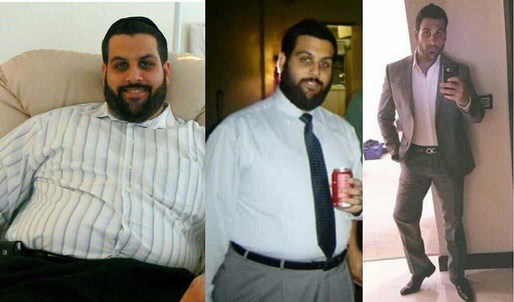
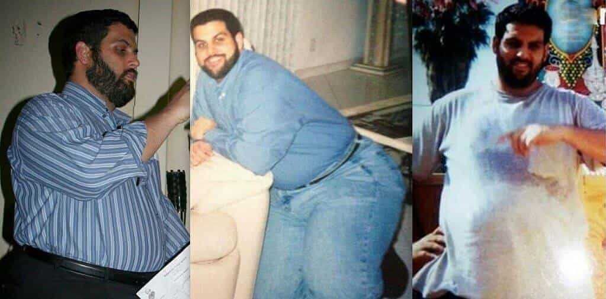
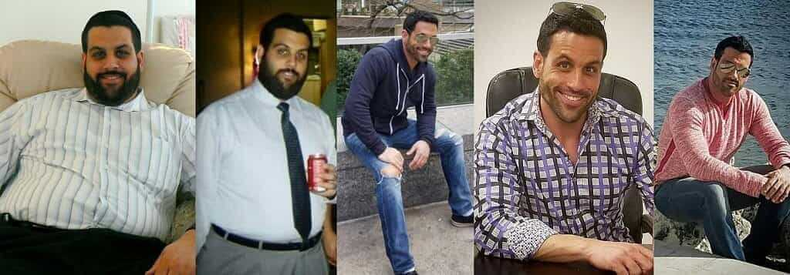
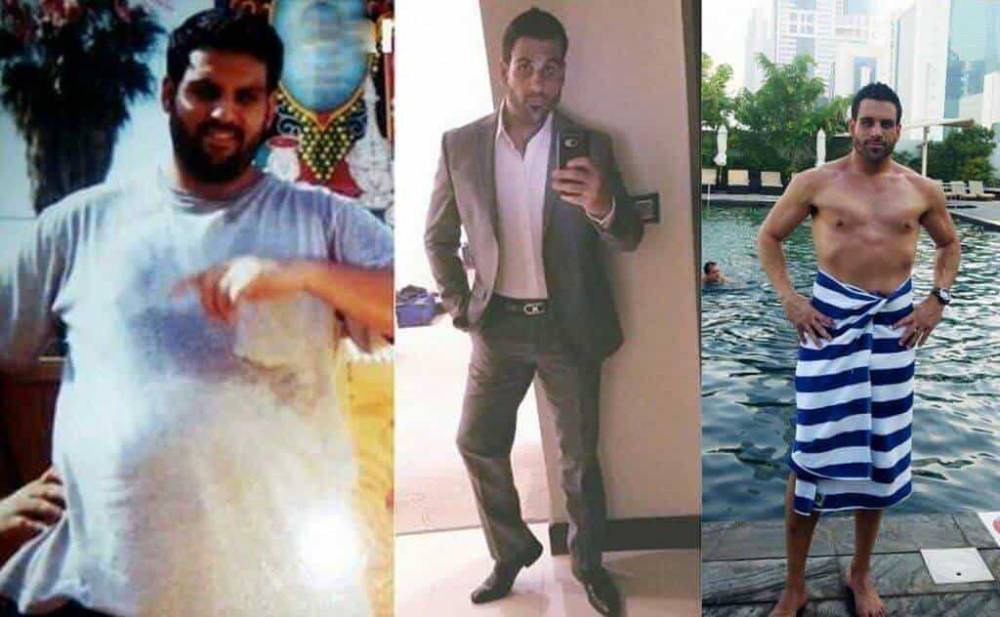
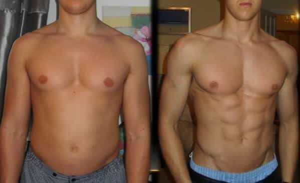
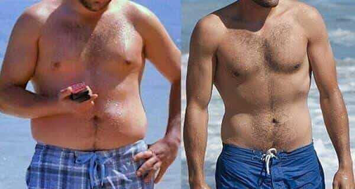
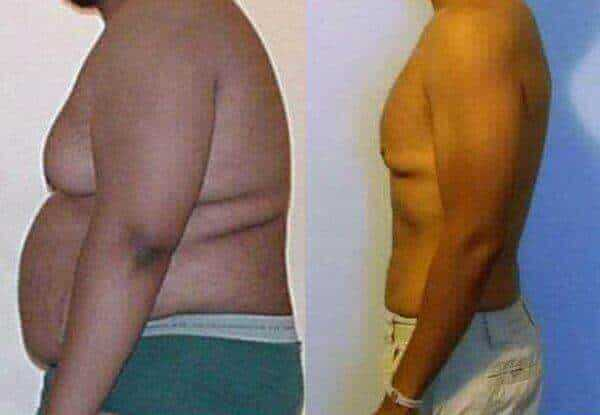

- Sebastian
- 115 Komentare
- 227 710 Seitenaufrufe
42 kg ohne Diät und Training verlieren
Diese Methode hilft Ihnen die überflüssigen Pfunde schnell und sicher zu verlieren
Hallo ihr Lieben! Sebastian Riewe ist wieder mit euch! Ich habe es geschafft auf fasst unbekannte Weiße abzunehmen, und es ist sehr möglich, dass dieser Beitrag bald gelöscht wird. Dieses einzigartiges Method ist eigentlich eine neue Entdeckung in der Welt der Ernährung. Viele Diätassistenten versuchten verzweifelt ihn zu verbergen, weil seine Veröffentlichung ihnen viele Probleme bringen könnte. Ich habe sehr viel Zeit und Geld investiert, um verschiedenen Diäten auszuprobieren und mit einem Personal Trainer zu trainieren. Mir hat jedoch nichts geholfen. . Ich habe eine andere Lösung gefunden, die sich als so einfach und erschwinglich herausstellte, dass es kaum zu glauben war. Jetzt möchte ich allen, die Probleme mit dem Übergewicht und der Gesundheit haben, das Geheimnis verraten.
Das ist meine Geschichte:
Ich habe schon immer sehr gerne gegessen und bin deshalb seit meiner Kindheit dick. Am liebsten habe ich abends genascht. Meine Frau hat mich dabei nicht unterstützt, obwohl sie auch eigentlich nie dagegen war. Wir haben jedoch schnell feststellen können, dass mein Körper sich rapid verändert, insbesondere im Unterleib. Erst dann bemerkte ich, dass ich übergewichtig war und wie ein großes, fettes Schwein aussah. Mit 33 wog ich dann 125 kg was 42 kg Übergewicht war.
Außerdem hatte ich verschiedene gesundheitliche Probleme. Ich hatte schreckliche Schmerzen an der Stelle, wo die Bauchspeicheldrüse ist. Ich fühlte mich die ganze Zeit müde, schwitzte übermäßig und hatte Schwierigkeiten beim Atmen. Das Schrecklichste war, dass ich impotentan bekam. Ehrlich gesagt hat mein dicker Bauch meine „Männlichkeit“ lange Zeit vor mir verborgen. Die Impotenz beeinflusste auch mein Familienleben. Meine Frau und ich begangen uns oft zu streiten. Ich konnte meine eigene Frau nicht befriedigen, was ein sehr schwerer Schlag auf mein Selbstbewusstsein war. Ich hasste mich selbst und fühlte mich wie ein echter Verlierer.
Ich habe alle Untersuchungen im Krankenhaus gemacht und die Ergebnisse waren katastrophal. Ich war in ernsthafter Gefahr Diabetes zu bekommen. Schlechte Essgewohnheiten haten ihre Auswirkungen auf meinen ganzen Körper, insbesondere auf die Bauchspeicheldrüse
Ich begann mit einer strengen Diät. Wenn Sie das ganze Leben lang essen was Sie wollen, dann kann eine Diät eine große psychische Qual sein. Ich stellte mich jede Woche auf die Waage, in der Hoffnung, dass meine Qualen nicht umsonst waren. Trotzdem, zeigte die Waage immer die gleiche Zahl - 125,9 kg. Nach 3 Monaten beschloss ich meiner Ernährung mehr Bewegung hinzuzufügen und fing an ins Fitnessstudio zu gehen. Der Trainer sagte mir, dass die Kilos erst nach 6 Monaten anfangen zu purzelen, weil ich nicht hart trainieren durfte. Deswegen machte ich nur einfache Übungen wie Laufen auf dem Laufband, leichtes Radfahren, Kniebeugen und Springen. Aber es war schwer für mich auch 10 Kniebeugen zu machen. Ich war immer außer Atem und mir war schwindelig. Die andere Leute im Fitnessstudio haben mich deswegen ausgelacht. Ich gebe zu, dass es wirklich lustig ist, wenn ein großer, fetter Idiot atmet und schwitzt, während er Übungen macht, die jeder Rentner machen kann.
Das waren die schwierigsten Momente in meinem Leben. Ich war immer hungrig. Ich habe sogar vom Essen geträumt. Ich war immer nervös. Ich hätte mich vielleicht besser gefühlt, wenn ich die Unterstützung meiner Frau gehabt hätte, aber meine Situation ärgerte sie. Wir haben uns deshalb die ganze Zeit geschtritten und ich konnte nur schreckliche Dinge von ihr hören. Sie nennte mich "dickes Schwein", "Looser" und rief ständig: "Du wirst mich nie befriedigen können". Das war schrecklich. Meine eigene Frau hatte nicht an mich geglaubt. Schnell darauf verließ Sie mich wegen einen anderen Mann und wollte die Scheidung.
Danach habe ich versucht mich strikt an meine Diät zu halten und so oft wie möglich ins Fitnessstudio zu gehen. Nach einem Monat zeigte die Waage aber wieder die gleiche Zahl - 125 kg, wonach ich aufgegeben hab.Danach fing ich wieder an Fast Food zu essen und zwar mit der gleichen Leidenschaft wie zuvor.
Von diesem Moment an wollte ich nicht mehr leben. Ich hätte ganz bestimmt Selbstmord begangen, wäre da nicht mein Freund Patrick. Ich zog zu ihm um die Depression zu bekämpfen. Ich erzählte ihm alles, was ich schon lange Zeit für mich behalten habe. Es war für mich mir sehr peinlich, dass ein erwachsener Mann wie ein kleines Mädchen weint! Aber es war viel schlimmer mein Problem für mich zu behalten ...Patrick hatte Verständnis. Er hörte mir aufmerksam zu und fragte dann: "Warum hast du mir nicht eigentlich früher davon erzählt? Ich habe vor kurzem mit diesem Produkt abgenommen", und gab mir eine Packung Kapseln. Patrick meinte, dass diese Kapseln den Stoffwechsel stimulieren und extrem schnell Fett verbrennen

Es war für mich schwer daran zu glauben, aber am Ende habe ich es doch getan! Patrick hat schon immer viel Fast Food und andere ungesunde Dinge gegessen und war trotzdem immer gesund und gutaussehend . Ich fing an im Internet nach zusätzlichen Informationen über die Kapseln zu suchen und begann ihn gemäß der Gebrauchsanweisung einzunehmen. IIch habe zweimal täglich 1 Kapsel 30 Minuten vor den Mahlzeiten eingenommen. Ehrlich gesagt habe ich nicht erwartet, dass es mir etwas Gutes bringt. Ich konnte mir nicht vorstellen, dass man ohne Diät und Sport so abnehmen kann.
Meine Resultate:
Nach sieben Tagen hat sich mein Gewicht nicht sichtbar geändert, aber ich fühlte mich sehr viel besser. Ich hatte mehr Energie und Ausdauer. Nach 14 Tagen war ich geschockt. Schon 7 kg waren runter obwohl ich gegessen hab was ich wollte.Ich habe sehr leicht abgenommen, ohne auf etwas zu verzichten. Das war einfach unglaublich!
In den nächsten 7 Tagen habe ich noch 7 kg abgenommen! Die Kilos purzelten einfach in nur 3 Monaten.
An jedem Tag hatte ich mehr Energie und die Stelle im Bereich meiner Bauchspeicheldrüse hörte auf zu schmerzen. Außerdem bin ich die Impotenz losgeworden. Nachdem mein Körper entgiftet war, wurde auch meine Erektion stärker und länger (die durchschnittliche Dauer des Geschlechtsverkehrs beträgt jetzt 40-60 Minuten). Außerdem, habe ich die Aufmerksamkeit der Frauen gewonnen.Wirklich unglaublich! Plötzlich suchte meine Ex-Frau nach mir und wollte das wir uns versöhnen. Sie entschuldigte sich bei mir, aber ich hatte kein Interesse mehr an ihr.
ist ein 100% natürliches Produkt.. Trinken Sie 2 mal täglich 1 Kapsel 30 Minuten vor den Mahlzeiten oder zu den Mahlzeiten ein. Das Ergebnis lässt nicht lange auf sich warten!
- entgiftet, stabilisiert den Cholesterin- und Glucosespiegel, erhöht die Konzentration von Leptin - dem Hormon, der Sie sättigt;
- Verbrennt Fette;
- Stabilisiert den Apetit;
- Beschleunigt den Stoffwechsel, was eine weitere Gewichtszunahme verhindert.
Von diesen Behauptungen habe ich mich bei einem Arzttermin selbst überzeugt und festgestellt, dass ich vollkommen gesund bin. Die Versprechen des Herstellers waren wahr. Mein Blutzucker- und Cholesterinspiegel waren normal und ich aß alles was ich wollte und so viel ich auch wollte. Ich glaube, jeder Mann möchte gerne so leben.
Nach 3 monatlicher Verwendung von Kapseln habe ich 42 kg abgenommenund wiege jetzt83 kg.
Dieses Produkt macht nicht süchtig. Ich habe eine lange Pause gemacht und fühle mich immer noch gut. Außerdem kamen die Pfunde, die ich verloren habe, nie wieder zurück.Jetzt ist mein Gewicht stabil und ich wiege die ganze Zeit 83 kg.
Hier ein Link zur offiziellen -Webseite für alle, die so schnell und einfach abnehmen wollen wie ich. Trinken Sie und verbessern Sie Ihre Gesundheit und Lebensqualität Dieses Produkt ist extrem günstig im Vergleich zu den erstaunlichen Ergebnissen, die Sie im Gegenzug erhalten.BITTE BEACHTEN SIE, dass dies dieeinzige Webseite istüber der Sie das Originalprodukt bestellen können. Andere Websites verkaufen Produkte, die in China hergestellt werden und nicht wirksam sind. Es gibt viele dieser Websites. Als ich auf der offiziellen Website bestellt habe, haben sie mir nichts berechnet! Ich habe erst bezahlt, als ich das Produkt erhalten habe.
wenn die letzten Vorräte nicht mehr zu verfügen sindhat mein Leben unglaublich verändert. Ich bin mit meinem Aussehen sehr zufrieden. Ich bin gesund und genieße die Aufmerksamkeit der Frauen. Ich musste meine Erfahrung mit Ihnen teilen. Hören Sie auf, sich mit Diäten zu quälen! Passen Sie auf sich auf! Viel Glück!<
Das beste Produkt zum Abnehmen
Vielen Dank für Ihre Aufmerksamkeit. :) Sebastian
Komentare
War gerade auf der Suche nach Informationen über . Danke für diese ausführliche Erklärung!
AntwortenAlles wahr! Ich habe diesen Kapseln vor gut einem Jahr getrunkenund habe 14 kg in einem Monat verloren.Ich nahm jeden Tag ab! Seitdem ist ein Jahr vergangen und mein Gewicht ist immer noch gleich! Ich wiege 54 kg!
Antworten
Ich nehme ein. Ich habe ihn hier gekaufft, und sehr billig bezahlt. Es funktioniert super! Außerdem, ich habe 14 kg abgenommen. Extra bonus!

Antworten
Ich stimme vollkommen zu! hilft wirklich! Der Speck vom Bauch war innerhalb einem Monat komplett weg!
 AntwortenSuper tolles Produkt!
Antworten
Hat schon jemand bestellt? Wie lange dauert denn die Lieferung?
AntwortenIch habe ihn über die offizielle Webseite bestellt. Die Lieferung ist schnell.Mein Fitnesstrainer hat mir dieses Produkt empfohlen. Die Ergebnisse sind erstaunlich! Ich habe in 2,5 Monaten 35 kg abgenommen.
 AntwortenIm Fernsehen lief ein Program wo berühmte Ärzte über dieses Produkt sprachen. Sie sagten, dass das Übergewicht in 98% der Fälle durch endokrine Störungen, hohe Blutzucker- und Cholesterinspiegel und einen langsamen Stoffwechsel verursacht wird. Die Geschichten über die Wirksamkeit dieses Produkts scheinen wahr zu sein
Antworten